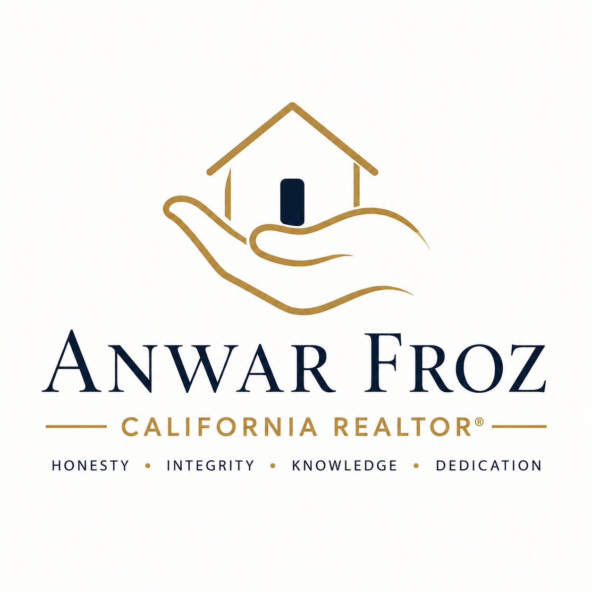

Experience shaped by technology, leadership, and service.
I bring a long professional history of analytical thinking and complex problem-solving to each real estate transaction.
Professional Background
Before beginning my real estate career in 2020, I spent nearly four decades in Information Technology, building software and supporting mission-critical systems in engineering, aerospace, insurance, and telecommunications.
That experience taught me to be thorough, organized, dependable, and calm when decisions are complex. Those are the same qualities I bring to clients today.

From information technology to real estate.
1981 – Began professional IT career
Start of a career devoted to systems, software, and information technology.
Electronic Data Systems (EDS)
Systems and software development.
Rockwell International
Engineering and information systems.
Sundstrand Fluid Systems — Arvada, Colorado
Software and systems development.
Martin Marietta — now Lockheed Martin
Defense and aerospace software engineering.
Fireman’s Fund Insurance — 1990–1995
Lead Systems Engineer.
AT&T — 1995–2013
Senior Database Administrator, Professional Technical Architect, Senior Systems Analyst, and Software Quality Engineer.
2020 – Began real estate career
California REALTOR® serving buyers and sellers with a careful, client-first approach.
Professional guidance without sales pressure.
- Clear explanations and responsive communication
- Careful review of documents and deadlines
- Market analysis grounded in available data
- Respect for your goals, budget, and timing
- English, French, and Farsi/Dari communication